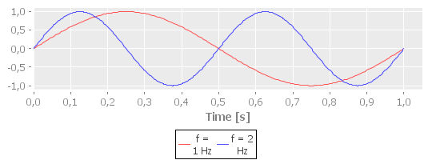

Sound Synthesis & Playback in Clojure
I’ve been playing with sound in Clojure lately so I thought I’d document what I’ve learned.
This tutorial covers generating simple, clean sounds of desired frequency (sines) and accessing Java Sound API (it’s not that scary, really). We’ll start with nothing and at the end, we’ll even play some melody with synthesized sounds :) (no instruments, pre-recorded samples or whatsoever).
Entry level: know where your repl is
Fast Facts About Sound
Making some noise is in fact moving particles of air a speaker does that. And we will move the speaker. From perspective of a programmer playing some sound is changing speaker’s position over time. Because on computers nothing is continuous, we can manage it’s position in concrete moments only. These moments come at constant rate. So we can imagine that playing a sound is actually feeding our speaker with it’s position values regularly.
About those moments: Speaker can move back and forth. It’s position is relative to some starting position to which we will refer as position zero. Moving speaker forward is increasing it’s position and moving backward is decreasing it’s position (actually, it can be the other way around but this time we shouldn’t care). So, the speaker’s position is a number and it’s called a sample.
Technicalia of Sound
Sample has fixed size and it’s usually 16 bits. Sample size is limiting our minimum and maximum value. We don’t have to bother about what these values are (it’ll be handled automatically).
Pace at which samples come to a sound system is usually 48000 Hz (Hz [Hertz] means “ticks/samples per second”) or 44100 Hz (“Audio CD” quality) and it’s called sample rate. Yes, we need to feed our speaker that fast ;).
Know Your Math
Because this tut is about generating sines I have to say what a sine actually is. Sine is the cleanest type of sound possible. It’s also the outcome of universally known sin function.
Someone said that every sound can be torn to several sines. So once we can generate one sine we can synthesize any sound. In this tut we’ll generate just one at a time ;) .
Every sine played over time has it’s frequency f. It’s measured just like sample rate, in Hz. Frequency is a weird number, because it’s just inverted period (also called term and abbreviated T: time after it repeats itself):
f = 1 / T
T = 1 / f
It means that sine of 1 Hz frequency have 1 s period and sine of 2 Hz frequency have 0.5 s period and so on.

Period is important because we will generate data only for one pass of
a sine and play it in a loop (without any loop involved ;) ).
Some Code At Last!
Now we’ll jump right into code. As a basis of generating sine
we’ll use Math/sin function. It generates sine for period of 2π
so we have to scale it to desired period.
(defn sine [sample-rate freq]
(let [term (/ 1 freq)
samples (* term sample-rate) ;1
factor (/ (* 2 Math/PI) samples)] ;2
(map #(Math/sin (* % factor)) ;3
(range samples))))
sine function creates a collection of numbers which are values of
speaker position over time (successive samples). Explanation for
numbered lines:
Amount of samples depends directly on term and sample rate. Sample rate tells how many samples correspond to 1 sec. So if we take a product of term and sample rate we will get the amount of samples for this frequency.
To scale 2π period to our sample count we will multiply every number from
(range samples)byfactor.Actual collection generation using
Math/sinfunction.
Every number in returned collection will be in [-1..1] range. We can
check that by just invoking sine (tip: test only with large values
of frequencies because small frequencies results in very long
sequences):
user> (sine 48000 5000)
(0.0 0.6087614290087207 0.9659258262890683 0.9238795325112867
0.49999999999999994 -0.13052619222005177 -0.7071067811865475
-0.9914448613738104 -0.8660254037844386 -0.38268343236508956)
Now we get the idea of generating a sine. The rest of this tutorial is actually just technical stuff, but they’re essential to get things working.
Audio Formats
To tell the sound system what we want to play we need to agree on some kind of contract on how our sound data will be formatted. This contract (or protocol if you will) is called an audio format. We’ll just focus on most used format nowadays.
An audio format in Java is represented by object of AudioFormat
class (which lives in
javax.sound.sampled,
we’ll need some more classes from there, just keep that in mind).
Objects of this class serve only as metadata so we’ll create one,
keep it somewhere and pass it around.
(import '(javax.sound.sampled AudioFormat AudioFormat$Encoding))
(def popular-format
(AudioFormat. AudioFormat$Encoding/PCM_SIGNED ;1: format
48000 ; sample rate
16 ; bits per sample (2 bytes)
2 ; channels: stereo!
4 ;2: frame size 2*16bits [bytes]
48000 ;3: frame rate
false ;4: little endian
))
Again, I’ll explain the numbered lines:
PCM_SIGNEDis a linear signed and uncompressed format, which means that each sample will be a signed integer.(
AudioFormat$Encoding/PCM_SIGNEDmeansPCM_SIGNEDstatic variable inEncodingclass which is inner class inAudioFormat.)Frame is a complete unit of data for each moment in time (data for all channels). So it’s size in our uncompressed format is just a number of bytes for every sample multiplied by number of channels.
Frame rate can be different from sample rate but it doesn’t make sense this time.
When we have more bytes than one for a sample, order in which we read them matters. It’s so-called endianness. Big endian is reading bytes in forward direction, little endian is reading them backwards. My computer is little endian and I’m sympathizing with him.
How To Actually Play Something?
To make our speakers move we need a medium (as in mediation) that
will tell speakers what to do for us. This medium is called a line
in other places by analogy with lines in mixers. It can be acquired
from AudioSystem class using getLine method. There’s a more
elaborate explanation on mixers and lines so I won’t get into much detail.
(import '(javax.sound.sampled AudioSystem DataLine$Info
SourceDataLine))
(defn open-line [audio-format]
(doto (AudioSystem/getLine
(DataLine$Info. SourceDataLine audio-format))
(.open audio-format)
(.start)))
“Getting a line” is actually querying Java’s audio system about line
that complies to our needs. Query is an instance of
DataLine.Info
class. SourceDataLine says that we require a line that we can write
to. Names of SourceDataLine and TargetDataLine correspond to how
audio system sees it so they mean “source” and “target” not for our
program but for audio system. Other parameter to DataLine.Info
constructor is an audio format.
Next thing after getting a line is opening it and allowing data to
flow through it. This is done by open and start methods
respectively.
Then, playing a sound is done by invoking method write(byte[] b, int off, int len) which writes len bytes from b starting at index off. Writing will block until all bytes from b are flushed to sound system buffers.
Phew, now we know where we need to get: we’ll generate that byte array for particular line.
According To Contract…
Our sine is not quite ready to push it to speakers yet. We need to satisfy audio format that we defined earlier. To do that we will:
Scale values of sine to maximum and minimum values possible for our sample size. We have 16 bits at our disposal which means we have circa +/– 215 range (one bit is stolen for sign).
Tear each sample to bytes according to chosen endianness.
Multiply each sample to conform number of channels.
Pack whole sine to byte array.
Scaling
When coming out from sine function our samples have floating-point
values from -1 to 1. We need to scale them to signed integers with
values from -2samplesize-1 to
2samplesize-1-1. So just mulplying by amplitude of
2samplesize-1 will do the trick. Actual amplitude will be
delivered by amplitude function:
(defn amplitude [sample-size]
(Math/pow 2 (- sample-size 1.1)))
I subtract 1.1 (not 1) from sample size to avoid dangerous inaccuracy when multiplying two floating-point numbers.
Actual scaling will be done in quantize function:
(defn quantize [amplitude value]
(int (* amplitude value)))
Fragmentation To Bytes
I do reading integers backward and forward like this:
(defn little-endian [size x]
(for [b (range size)]
(-> (bit-shift-right x (* 8 b))
(bit-and 255)
unsigned-byte)))
(defn big-endian [size x]
(reverse (little-endian size x)))
Where unsigned-byte is needed to cheat JVM because JVM supports only
signed bytes with values from -128 to 127 and we need signed bytes
with values in 0..255 range. Blah. So we cheat like this:
(defn unsigned-byte [x]
(byte (if (> x 127) (- x 256) x)))
This is one thing that I won’t explain here :P. It’d be just too big. It’s based on how signed and unsigned numbers look internally.
Repeating Data For Each Channel
OK. This will be very lame stereo. We’ll just repeat data for each
channel and I do it like this: (take frame-size (cycle bytes)). If
you wanna you can modify that code (in fact, you should, wink wink,
nudge nudge) and incorporate some fancy space-age surround effect.
Gathering It All Together
Whole pipeline is mirrored in sine-bytes function with each of these
steps represented by mapping a function on a collection returned by
it’s predecessor:
(defn sine-bytes [format freq]
(let [{:keys [sampleSizeInBits frameSize
sampleRate bigEndian]} (bean format)
sample-size (/ sampleSizeInBits 8)
ampl (amplitude sample-size)
tear (if bigEndian big-endian little-endian)]
(->> (sine sampleRate freq)
(map (partial quantize ampl)) ;1
(map (partial tear sample-size)) ;2
(map cycle) ;3
(map (partial take frameSize)) ;3
(apply concat) ;A
byte-array))) ;4
Numbers in comments corresponds to points mentioned before. Line ‘A’
is responsible for flattening the list of lists to a single
list. Output of sine-bytes is what a line needs.
Agent
I’ve promised that there will be no loop so here it is: whole playing
thingy will be handled by an agent. State of our agent will look like
this:
{:line line to write to
:playing are we are playing or not
:data byte array with sound data}
Setting sine data of desired freq will be done by recalc-data:
(defn recalc-data [{:keys [line] :as state} freq]
(assoc state :data (sine-bytes (.getFormat line) freq)))
For most of the time of agent’s life, play-data will run (actually
making the noise):
(defn play-data [{:keys [line data playing] :as state} agent]
(when (and line data playing)
(.write line data 0 (count data)) ;1
(send-off agent play-data agent)) ;2
state)
play-data will write whole data to the line [1], and send itself
to agent to play it again [2] (here’s how there’s no loop but there’s a
loop). Turns out, agents are nice way to model such continuous I/O
asynchronously. We’ll start and pause playing by these fns:
(defn pause [agent]
(send agent assoc :playing false)
(doto (:line @agent)
.stop .flush))
(defn play [agent]
(.start (:line @agent))
(send agent assoc :playing true)
(send-off agent play-data agent))
pause is stopping the line to pause immediatly when
called. Without this, pause would take effect after whole buffer is
played. flush is invoked to flush anything that’s left in sound
system buffers.
I use send-off to play-data because it’s a blocking operation.
Two final fns will automate creating fresh agent and changing frequency on the fly:
(defn change-freq [agent freq]
(doto agent
pause
(send recalc-data freq)
play))
(defn line-agent [line freq]
(let [agent (agent {:line line})]
(send agent recalc-data freq)
(play agent)))
Testing Section Without Any Interesting Title
Now we can test it. Lets create a line agent playing some nice bass tone.
user> (def a (line-agent (open-line popular-format) 60))
If you don’t have a subwoofer or good headphones you’d like to increase the frequency to hear anything:
user> (change-freq a 200)
Also, we can test pausing and replaying the sound.
user> (pause a)
user> (play a)
If there’s nothing coming out from speakers or some exception happened try changing audio format, my guesses would be toggling endianness and changing both rates to 44100.
Appendix A: Melody
Maybe simple continuous sound is boring? Let’s play a melody! :)
The simplest notation for music that I came up with is just a pair of tone and duration. So a melody is just a sequence of those.
(def mountain-king
[[0 1] [2 1] [3 1] [5 1]
[7 1] [3 1] [7 2]
[6 1] [2 1] [6 2]
[5 1] [1 1] [5 2]
[0 1] [2 1] [3 1] [5 1]
[7 1] [3 1] [7 1] [12 1]
[10 1] [7 1] [3 1] [7 1]
[10 2] [-2 2]])
First number of every pair is a distance in semitones from some base tone. The second is a duration of note relative to some base duration.
Function tone-freq will translate tones to raw frequencies. For the
value 99 it’s 440 Hz which happens to be so-called pitch
standard.
To get a note an octave higher or lower just add/subtract 11.
(defn tone-freq [x]
(-> (Math/pow 2 (/ x 11)) (* 440) (/ 512)))
I won’t get into details here… It’s just scaling values so it’s comfortable to use.
Using Thread/sleep is maybe the lamest timing
technique you can get on JVM:
(defn play-melody [agent base-tone base-duration melody]
(doseq [[tone duration] melody]
(change-freq agent (tone-freq (+ base-tone tone)))
(Thread/sleep (* base-duration duration)))
(pause agent))
Now, lets just play it (the awful clipping needs to be addressed in the nearest possible future):
user> (play-melody a 70 400 mountain-king)
If it’s too low, try increasing base-tone. If it’s to slow, try
decreasing base-duration.
That’s all. I’ve put the code here: https://gist.github.com/1034374. Tell me what you think.